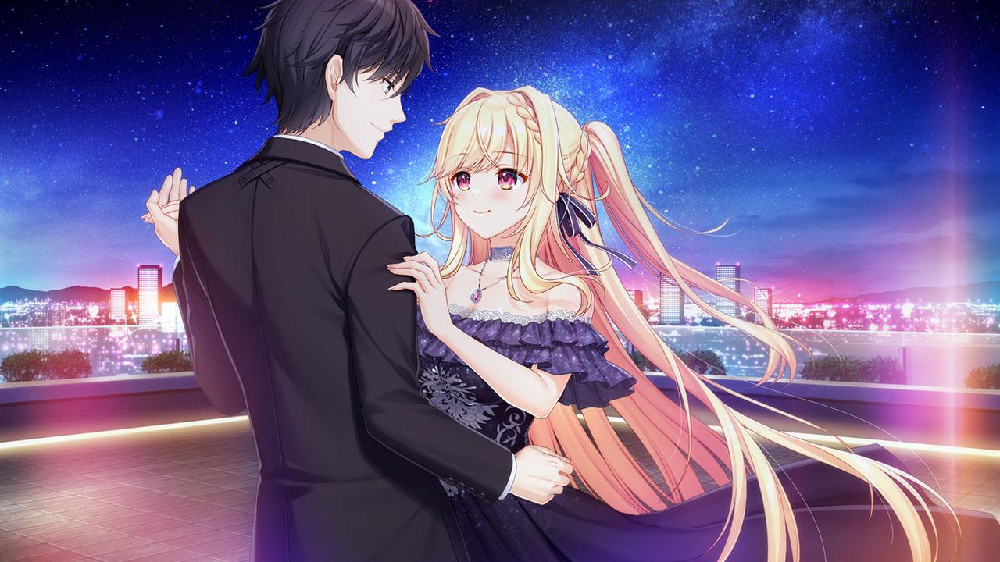

Grand Route · II

Tentu kenyataannya gak semudah itu — Mili sang pasifis, tipe2 orang yang kalau ditanya mengenai Trolley Problem bakal jawab akan menyelematkan semuanya, adalah ancaman di mata berbagai pihak.
Sikap positif serta baik hati merupakan kekuatan sekaligus kelemahannya — dieksekusi dengan baik di routenya, menjadikan Route Heroine yang paling impresif dan paling seru menurut gw pribadi.